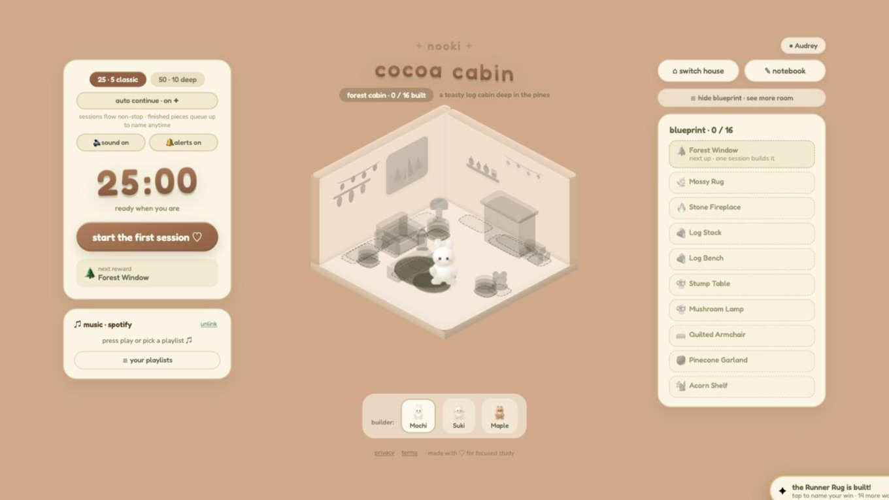

01 /
Nooki
Nooki is a gamified Pomodoro app. Every finished session builds one piece of furniture in a small clay room, and you name each piece with what you got done, so the room doubles as a journal of wins.
There are six rooms to build with 16 pieces each, 25/5 and 50/10 timer modes, three companion builders, and an optional Google sign-in that saves progress across devices. Connecting a Spotify account plays music in the app, and it installs to a phone home screen. I have run user interviews and usability tests on it.
Live and in use. The full case study is still to be written. Source on GitHub